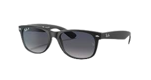

Product Overview
Sunny Glasses are innovative glasses designed to bridge the communication gap for the deaf community, offering sign language interpretation and speech-to-text capabilities.
Features
- Real-time sign language interpretation
- Speech-to-text conversion displayed as subtitles
- High-quality audio output for translated speech
- Comfortable and stylish design
How It Works
Step 1: Record Sign Language
Wear Sunny Glasses and start signing. The built-in cameras record your sign language movements.
Step 2: Interpret and Translate
The glasses interpret your sign language and translate it into English, speaking out loud for others to hear.
Step 3: Turn Speech to Text
When someone speaks to you, Sunny Glasses convert their speech into text, displaying it as subtitles on the lens.

What the Product Will Look Like
The ORIGINAL WAYFARER CLASSIC SUNGLASSES have been reimagined to include our cutting-edge technology, allowing seamless communication for the deaf community.